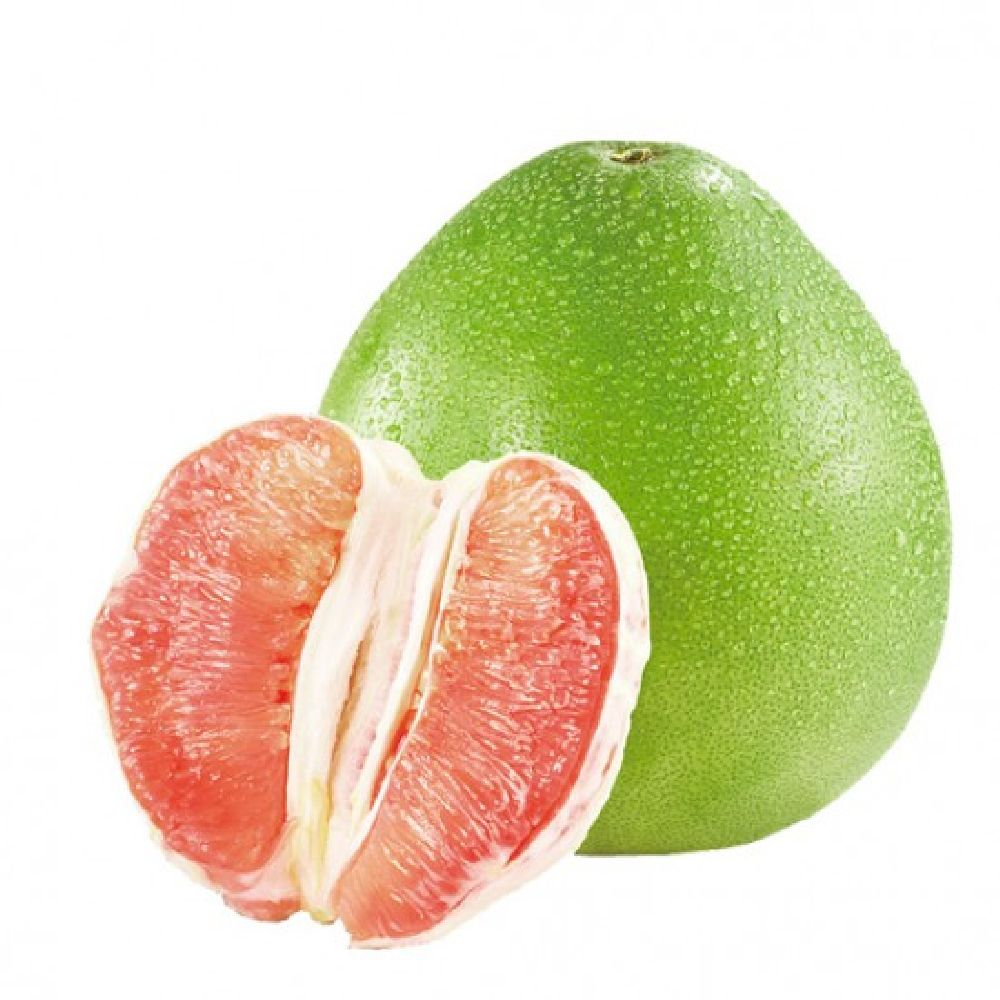
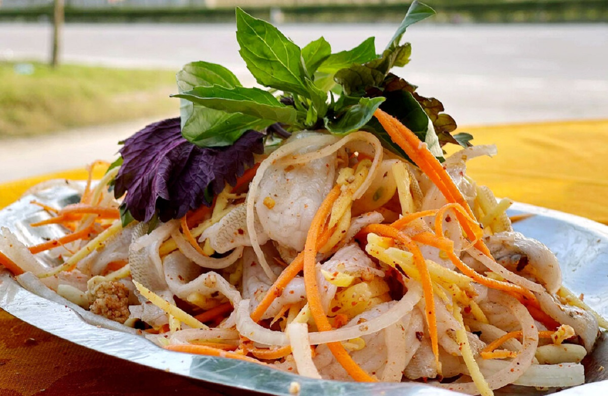
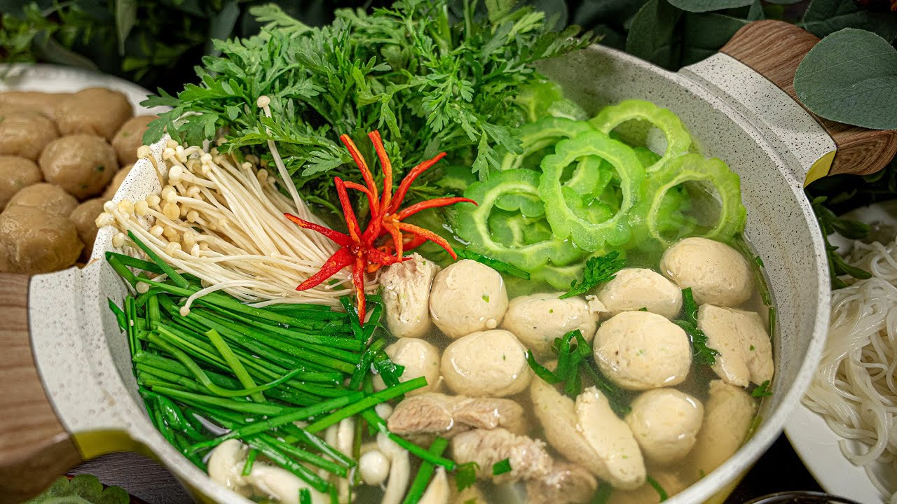
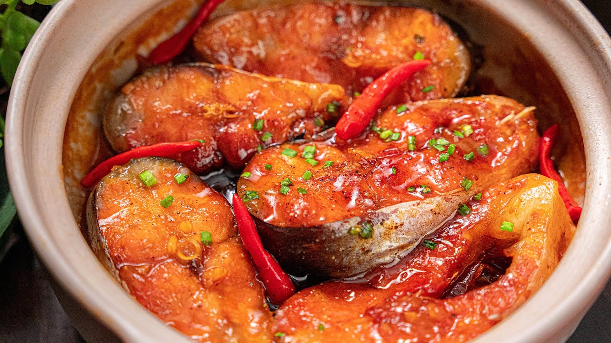
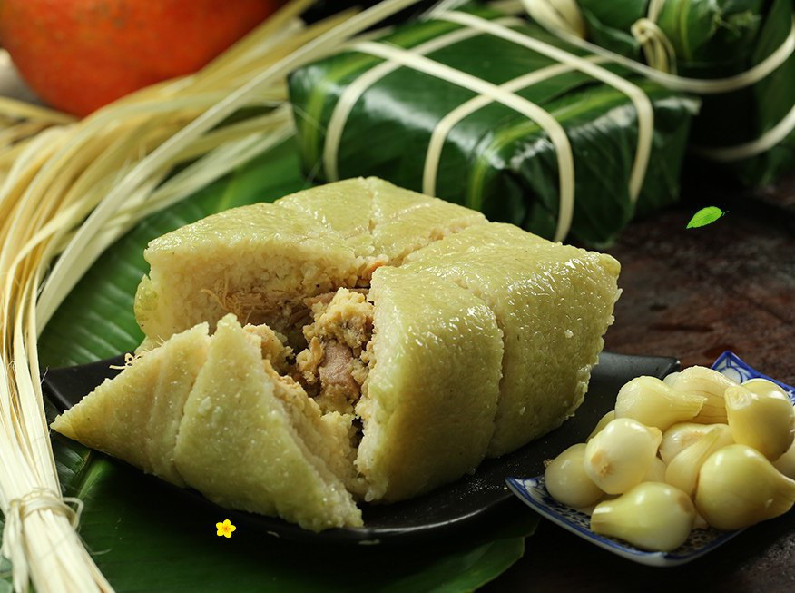
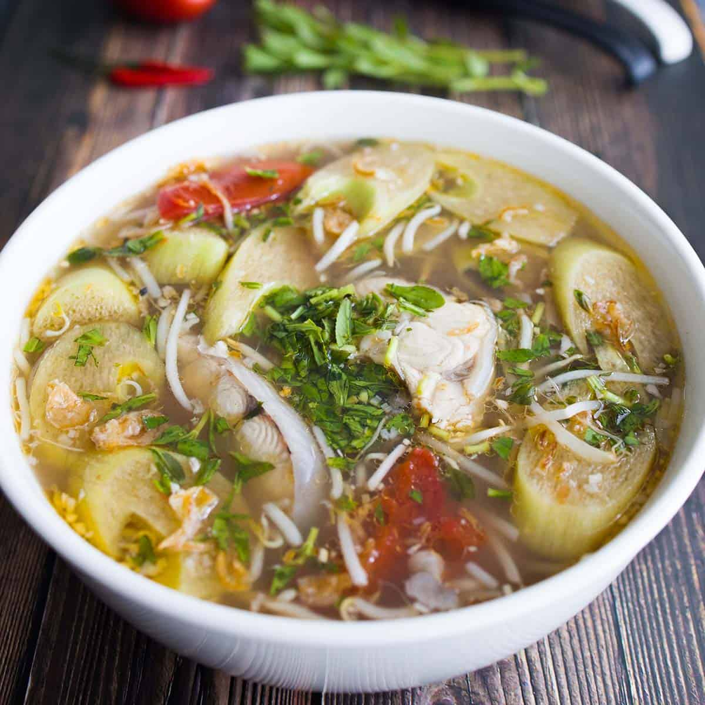

🍜 Ẩm Thực Tết Đồng Nai
Những hương vị đặc trưng từ vùng đất Trấn Biên
🍊 Đặc Sản Nức Tiếng

Bưởi Tân Triều
XemBưởi Tân Triều
Mô Tả: Bưởi Tân Triều nổi tiếng với vị ngọt, nước sánh, thịt mềm, rất thích hợp dịp Tết.
Đặc Điểm: Xuất xứ Đồng Nai, có chứng nhận địa lý.
Giá Trị: Giàu vitamin C, tốt cho sức khỏe.

Gỏi Cá Biên Hòa
XemGỏi Cá Biên Hòa
Mô Tả: Cá sông tươi trộn rau sống và nước chấm đặc trưng.
Đặc Điểm: Ăn với bánh tráng nướng.
Giá Trị: Giàu protein.

Lẩu Khổ Qua
XemLẩu Khổ Qua
Mô Tả: Lẩu khổ qua rừng đặc trưng miền Đông.
Đặc Điểm: Nước dùng đậm đà.
Giá Trị: Tốt cho tiêu hóa.

Cá Kho Tộ
XemCá Kho Tộ
Mô Tả: Cá kho truyền thống miền Đông.
Đặc Điểm: Nước kho sệt, đậm đà.
Giá Trị: Giàu Omega-3.

Bánh Chưng
XemBánh Chưng
Mô Tả: Gạo nếp, đậu xanh, thịt lợn.
Đặc Điểm: Thơm lá chuối.
Giá Trị: Biểu tượng Tết.

Canh Chua
XemCanh Chua
Mô Tả: Canh đầu cá chua thanh.
Đặc Điểm: Rất phổ biến dịp Tết.
Giá Trị: Giúp tiêu hóa tốt.